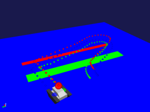

マーカ軌道の記録と表示
この機能は"パッシブマーカ"デバイスの位置と姿勢を時系列データとして記録・表示するものです。ここでは、モーションキャプチャコントローラアイテムを使ったパッシブマーカ軌道の記録と表示の仕方を説明します。
モーションキャプチャコントローラアイテムの作成と設定
シミュレーションの実行主体となるモーションキャプチャコントローラアイテムを生成します。 メインメニューの「ファイル」-「新規」-「モーションキャプチャコントローラ」を選択して生成してください。生成したモーションキャプチャコントローラアイテムは、対象とするボディの子アイテムとして配置します。
パッシブマーカの設定
モーションキャプチャコントローラアイテムは、ボディに設定したパッシブマーカの位置と姿勢を記録します。パッシブマーカは、カメラやライト等と同様に、任意のリンクのelements以下に記述します。以下は、パッシブマーカの記述例です。
-
type: PassiveMarker
name: RedMarker
translation: [ 0.0, 0.0, 0.3 ]
rotation: [ 0, 1, 0, -90 ]
radius: 0.1
color: [ 1.0, 0.0, 0.0 ]
transparency: 0.3
各キーの詳細は以下の通りです。
パラメータ |
デフォルト値 |
単位 |
意味 |
|---|---|---|---|
radius |
1.0 |
m |
パッシブマーカのマーカの半径を指定します。 |
color |
1.0, 0.0, 0.0 |
-, -, - |
パッシブマーカのマーカの色をRGBで指定します。 |
transparency |
0.0 |
- |
パッシブマーカのマーカの透過度を指定します。 |
symbol |
true |
- |
パッシブマーカを表すシンボルの表示/非表示を指定します。 |
シミュレーションの実行
シミュレーションバーから通常通りシミュレーションを実行してください。シミュレーションが終了するとシーンビュー内にパッシブマーカの軌道が表示されます。また、パッシブマーカの軌道はポイントセットアイテムとして記録され、モーションキャプチャコントローラアイテムの子アイテムとしてアイテムツリービューに登録されます。ポイントセットアイテムのチェックボタンを押すことで、パッシブマーカの軌道の表示・非表示を切り替えることができます。
